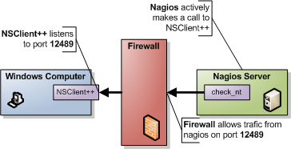
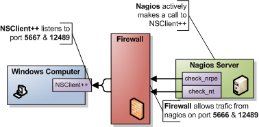
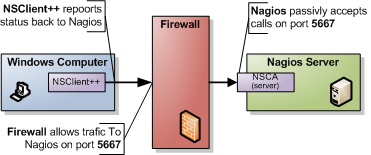
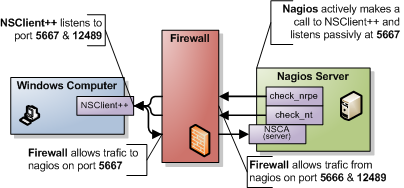

Navigation
- index
- next |
- previous |

- NSClient++ »
- 0.5.0
- Documentation »
This is a quick guide over how to use NSClient++ with Nagios. It is divided into four sections (so don’t miss the three other pages but this one).
NSClient++ supports several transports and you can use either one or several of these or you can create your own cusom transport. Transports are methods which facilitates communication between Nagios and your server. You can look at this much like for instance HTTP (which you are using now) and FTP. They both support transferring files but they have slightly different approaches so things work differently but the end result is the same. A file gets transfered. In our case the end result is that a monitoring result gets submitted to Nagios.
I would recommend nagios-beginners to starting out with NSClient++ to go with NSClient (since it is simplest to setup) and everyone else (NSClient++ beginner but nagios intermediates) go with NRPE (unless you have specific needs in which case you most likely know enough to choose for you self). And advanced users feel free pick and choose.
NSClient (check_nt):
This is the simplest and most locked in way to use NSClient++ you are limited to a handful of checks and there is no way to exploit the power of NSClient++ from here. The good though is that it is very simple to use and setup and the configuration is included with nagios so it might be a good way to start. It is also the “only” way to have password protection. But note that since there is no encryption the password is sent as clear text so if you are compromised it will be easy to find. Another option in favor of this is since check_nt is distributed in the “normal plugin kit” you undoubtedly already have everything you need on the Nagios side.
For details on configuring this go to the NSClient setup guide.
NRPE (check_nrpe):

NRPE is the preferred way and, if you ask me, you get the most out of NSClient++ choosing this mode. NRPE works much like NRPE for unix (if you are familiar with it) and in short you can say it relays a plugin request to a remote server. NRPE acts like a simple transport layer allowing remote execution. The difference between regular NRPE and NSClient++ is that NSClient++ has several built-in checks and thus does not require scripts for basic checks. So with NSClient++ you get a lot of ready-to-use checks that wont require you to have scripts. But if you choose you can disable all “modules” and stick with a pure NRPE installation and only external scripts or just use the external script to extend NSClient++ when you need.
For details on configuring this go to the NRPE setup guide.
NRPE and NSClient Server:
NSClient++ is built around choice this you can naturally use both NRPE (check_nrpe) and NSClient (check_nt) if you wish and this is the preferred way to migrate from old legacy setup to a more modern one.
For details on configuring this go to both the NRPE setup guide and the NSClient setup guide.
NSCA (nsca-client):
Passive checking is the “reversed” of active checking this means that instead of Nagios “calling out” to your (windows) server the (windows) server will phone home to the Nagios server instead. The best way to illustrate this is to compare the NRPE and the NSCA pictures above.
For details on configuring this go to the NSCA setup guide.
Make Your Own:
There are several other monitoring protocols out there and you can quite easily with for instance Lua make your own how to do this is outside the scope of this guide but you should know that the “sky is the limit”.